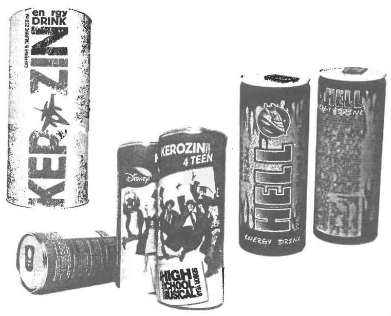

Așa-i că mereu v-ați întrebat de ce sunt americanii niște grăsani? Ei bine, omul modern este supus unor modificări fără precedent, în fața cărora organismul nu se poate adapta. Modificările alimentare din ultimii 70 de ani au fost într-atât de radicale, încât efectele asupra organismului uman s-au resimțit peste doar o singură generație. Constatăm în principal tulburări ale metabolismului, afecțiuni cu componente inflamatorii, dereglări ale tensiunii arteriale, nervozitate și stres. La acestea se mai adaugă o veritabilă explozie a cancerului. Dacă în trecut aceste afecțiuni erau considerate ca fiind boli ale bătrâneții, astăzi au devenit la fel de comune la orice vârstă.
V-ați gândit cât de mult colorant consumați într-o lună? Ei bine, suficient de mult cât vă este necesar să vă zugrăviți întregul apartament.
Un secret deschis
De 70 de ani, omul este otrăvit lent, fără ca autoritățile să întreprindă mai nimic pentru a-l proteja. Iar atunci când este născocită câte o reglementare nouă, aceasta are darul de a-i proteja pe marii investitori în sfera chimiei alimentare. Unul din cele mai bine păstrate „secrete deschise” ale guvernanților din umbră, Codex Alimentarius este planificat să intre în vigoare la 31 decembrie 2009 și s-ar putea să fie cel mai mare dezastru pentru sănătatea noastră. Documentul va stabili standardele de siguranță alimentară, regulile și reglementările în vigoare în peste 160 de țări, adică 97% din populația lumii.
Oficialii spun că documentul are doar un rol consultativ, de corectare. Însă, dacă ar fi să fie astfel, de ce ar fi nevoie ca țările din întreaga lume să adopte legi și să creeze organisme de aplicare? În România, perceptele Codexului au pătruns prin Legea 215/2004, iar acum sunt în lucru noi prevederi legale de „completare”.
Denumirea Codex Alimentarius provine din limba latină și se traduce prin legea produselor alimentare sau codul produselor alimentare. Comisia de comerț Codex Alimentarius este acum finanțată și condusă de Organizația Mondială a Sănătății (OMS, ce aparține Națiunilor Unite, ONU) și FAO (Organizația pentru Alimente și Agricultură a SUA).
Codex Alimentarius nu este altceva decât o colecție de standarde alimentare adoptate la nivel internațional, care au ca scop declarat protecția sănătății consumatorilor și asigurarea practicilor corecte în comerțul alimentar.
Ceea ce este arătat publicului este că acest document cuprinde standarde pentru toate alimentele, fie ele preparate, semipreparate sau crude și pentru distribuția către consumator, prevederi în ceea ce privește igiena alimentară, aditivi alimentari, reziduuri de pesticide, factori de contaminare, etichetare și prezentare, metode de analiză și prelevare. Ceea ce publicul nu va afla este că prin acest document se intenționează să se pună în afara legii orice metodă alternativă în domeniul sănătății cum ar fi terapiile naturiste, folosirea suplimentelor alimentare și a vitaminelor și tot ceea ce ar putea constitui mai mult sau mai puțin un potențial concurent pentru industria chimiei farmaceutice.
Românii, condamnați la otrăvire
Comisia Codex Alimentarius este un organism internațional, interguvernamental, creat sub egida Organizației Mondiale pentru Agricultură și Alimentație (FAO) și a Organizației Mondiale a Sănătății (OMS) în 1962. Fiecare țară membră are un Punct Codex Alimentarius Național. În România, acest organism a fost înființat prin Legea 215/27 mai 2004, care la articolul 51 precizează că „se înființează Comitetul Național Codex Alimentarius fără personalitate juridică”, în coordonarea președintelui Autorității Naționale Sanitar-Veterinare și pentru Siguranța Alimentelor (ANSVSA). În planul de activitate pe 2009-2010 al ANSVSA se specifică faptul că unul dintre obiectivele autorității este „îmbunătățirea contribuției României la activitățile Codex Alimentarius” și „participarea activă la Subcomitetele Codex Alimentarius și Comisia Codex Alimentarius și alte evenimente organizate la nivel Codex/FAO”.
Pe lângă România, la Codex Alimentarius au mai aderat alte 165 de țări, ai căror reprezentanți se întâlnesc alternativ fie la sediul FAO de la Roma, fie la sediul OMS de la Geneva. Următoarea întâlnire are loc în 2010, la Roma. În acest moment, Comisia funcționează după un Plan Strategic, elaborat pentru perioada 2008-2013. Obiectivele stabilite pentru această perioadă sunt promovarea unor cadre solide de reglementare a activităților, și anume un sistem solid național de control și sisteme de reglementare legislative pentru întregul lanț alimentar.
Rockefeller și începutul otrăvirii noastre
Originile chimiei farmaceutice și implicit ale Codexului se regăsesc în jurul anului 1860. Atunci, Bill Rockefeller, un banal comerciant de petrol cu specializarea în farmaceutică, vindea țăranilor naivi flacoane cu petrol brut, făcându-i să creadă că era un leac eficient în tratarea cancerului. El a denumit acest produs (care de fapt era petrol brut ambalat în flacoane): Nujol (New Oil – un nou tip de ulei). Afacerea sa era prosperă, cumpăra o fiolă de petrol brut de 30 grame prin Standard Oil la un preț de 21 cenți și o vindea pentru 2 dolari. Fără prea multă cultură, fără scrupule, fără cunoștințe sau studii în domeniul medical, cu puține noțiuni de contabilitate și de o aviditate feroce, Rockefeller a reușit să se impună. Noului produs Nujol i s-a atribuit „meritul” de „cură împotriva constipației” și a fost foarte comercializat la acea vreme. Între timp, medicii au descoperit că Nujol era nociv și că ducea în timp la maladii grave, eliminând vitaminele liposolubile din corp. Standard Oil s-a luptat să evite pierderile prea mari care ar fi putut surveni din această cauză și a adăugat rapid petrolului brut caroten pentru a elimina aceste carențe. Senatorul Rozal S. Coperland era plătit 75.000 dolari pe an pentru a promova acest produs.
Imperiul Rockefeller a fost construit grație acestei formidabile șmecherii care consista în a convinge oamenii să ingereze un derivat de petrol brut îmbogățit cu caroten. Așa au fost puse bazele industriei chimiei farmaceutice. Suntem deci foarte departe de fundamentele medicinii chineze, tibetane vedice sau persane, care erau în mod tradițional bazate pe cunoștințe extrem de precise legate de corpul uman și erau centrate (ca preocupare) pe binele și sănătatea ființelor umane.
Succesul comercial al produsului Nujol a permis diversificarea producției chimiei farmaceutice și atingerea unui nivel ridicat al beneficiilor financiare. În 1948, cifra de afaceri anuală a lui Rockfeller se ridica la 10 miliarde de dolari. Medicamentul Nujol încă mai poate fi găsit sub formă de ulei de parafină pură, clasificat drept laxativ ușor și recomandat împotriva constipației cronice rebele în terapiile igieno-dietetice obișnuite. Este fabricat la ora actuală de laboratorul Fumouze.
„Naziști” la ordinele lui Rockefeller
Trustul chimiei farmaceutice pe care îl cunoaștem a fost conceput de către o asociație condusă de Rockefeller și IG Farben din Germania. Compania Standard Oil aparținând așadar lui John D. Rockefeller, deținea în 1939 15% din acest nou trust germano-american. Rockefeller și-a infiltrat oamenii în conducerea partidului nazist, pe care l-au parazitat până la sfârșitul războiului. După război, s-au convertit la noua ordine, pe care au slujit-o cu spor. Obiectivele industriale ale IG Farben din Germania nu au fost bombardate în timpul războiului tocmai pentru a proteja interesele lui Rockefeller. Încă din 1932, industria chimiei farmaceutice IG Farben finanța efortul german de război cu până la 400.000 de mărci germane. Fără acest sprijin, așa cum afirma tribunalul de la Nürenberg: „cel de al doilea război mondial nu ar fi avut loc…”
Tribunalul de la Nürenberg a divizat Compania IG Farben în BASF, BAYER și HOECHST. Toți responsabilii germani din IG Farben, ce slujeau interesele companiei americane, și care au fost condamnați de tribunalul de la Nürenberg, au fost însă eliberați în 1952, la numai un an, cu ajutorul lui Nelson Rockefeller, fostul lor patron comercial, la vremea aceea ocupând funcția de Ministru al Afacerilor Externe al SUA. O dată eliberați, cei care se aflaseră în conducerea Companiei IG Farben s-au infiltrat în economia germană, ocupând funcții foarte importante. Până în anii ‘70 consiliul director pentru societățile BASF, BAYER și HOECHST era constituit din membrii ai partidului nazist. Începând cu 1959 aceștia îl finanțau pe tânărul Helmut Kohl. Prin susținerea politică a acestuia din urmă, cele trei filiale rezultate din IG Farben erau la momentul acela de 20 de ori mai puternice decât societatea mamă înființată în 1941. Organizația de mondializare asociată lui Rockefeller, a constituit o reușită totală, și deja de multă vreme piața chimiei farmaceutice a planetei a fost și este controlată, organizată și administrată pentru a asigura expansiunea industrială mondială a chimiei farmaceutice.
Codex Alimentarius, moștenirea lui Rockefeller
„Tradiția” cartelului de la IG Farben a continuat sub un alt nume: „Asociația pentru Industria Chimică”. În 1955, industria chimică farmaceutică mondială a fost regrupată sub auspiciile Camerei de Comerț Internațional a Națiunilor Unite și Guvernului German. Eforturile lor comune au fost camuflate sub numele de cod Codex Alimentarius. Un mare număr de partide politice europene așa-zise de stânga și de dreapta au fost finanțate de această industrie pentru a se asigura o legislație favorabilă industriei farmaceutice.
Codex Alimentarius intenționează să pună în afara legii orice metodă alternativă în domeniul sănătății cum ar fi terapiile naturiste, folosirea suplimentelor alimentare și a vitaminelor și tot ceea ce ar putea constitui mai mult sau mai puțin un potențial concurent pentru industria chimiei farmaceutice. Starea de spirit care predomină în cazul mondializării chimiei farmaceutice explică în mare parte desființarea sistematică a inovatorilor științifici independenți din ultimii 50 de ani. Această industrie folosește orice mijloc pentru a-și păstra locul pe piață în ceea ce privește tratamentul cancerului, al SIDA, al maladiilor cardio-vasculare etc. De zeci de ani este posibilă tratarea și vindecarea în majoritatea cazurilor a acestor maladii prin terapii naturiste alternative, dar sunt aplicate procedee de dezinformare în forță pentru a se ascunde publicului aceste adevăruri.
Specialiști în otrăvire
Scoaterea în afara legii a oricărei informații referitoare la medicina alternativă va bloca eradicarea anumitor maladii, asigurând astfel profituri și mai mari acestei industrii mondiale care tratează doar simptomele bolilor, fără a se îngriji de cauze. Doctorul Matthias Rath, un specialist german care duce campanii la nivel mondial pentru folosirea tratamentelor naturiste în cazul multor boli grave, descrie această situație astfel: „Adevăratul scop al industriei farmaceutice mondiale este de a câștiga bani pe seama bolilor cronice, și nu de a se ocupa de prevenirea sau eradicarea acestor boli… Industria farmaceutică are un interes financiar direct în perpetuarea acestor maladii, pentru a-și asigura menținerea și chiar creșterea pieței de medicamente. Pentru acest motiv medicamentele sunt făcute pentru a alina simptomele și nu pentru a trata adevăratele cauze ale bolilor… Trusturile farmaceutice sunt responsabile de un genocid permanent și răspândit, ucigând în acest mod milioane de oameni…”
O adevărată „legiune” de indivizi care să facă lobby pentru industria farmaceutică a fost angajată pentru a influența legislatorii, pentru a controla organismele de reglementare, pentru manipularea cercetării în domeniul medical și educațional. Numai în 1961, trusturile farmaceutice au făcut donații pentru marile universități din SUA în valoare de: Harvard – 8 milioane de dolari, Yale – 8 milioane de dolari, John Hopkins – 10 milioane de dolari, Stanford – 1 milion de dolari, Columbia din New York – 1,7 milioane de dolari etc.
Informarea medicilor este integral finanțată de către trusturi, care ascund cu grijă un mare număr de efecte secundare periculoase și chiar mortale ale medicamentelor, negându-le public. După ce a stabilit clar originea acestor crime și a dovedit responsabilitatea industriei farmaceutice în ceea ce privește instalarea unei politici mondiale de genocid extins, doctorul Matthias Rath a înmânat în data de 14 iunie 2003 Curții Internaționale de Justiție de la La Haye (Olanda) un act de acuzare pentru crime împotriva umanității.
438 milioane de petiții către Parlamentul European
La data de 13 martie 2002 europarlamentarii au adoptat legi în favoarea industriei farmaceutice, fixate prin dispoziții ale Codex-ului Alimentarius și care vizau elaborarea unei reglementări constrângătoare pentru toate terapiile naturiste și suplimentele alimentare – o manieră mai indirectă de a desființa concurenții care ar putea să ocupe un anumit loc pe piață, pentru că sănătatea se vinde și se cumpără.
Un val de petiții din partea populației a inundat mesageria europarlamentarilor, într-o asemenea măsură încât comunicațiile interne au fost blocate. În ciuda a o jumătate de miliard de petiții, directivele Codex-ului Alimentar au fost adoptate. Acest vot a fost o veritabilă denigrare a democrației, prevestind și alte viitoare dificultăți în respectarea acesteia.
Aplicații ale directivelor Codex Alimentarius
Începând cu iulie 2005, directivele Codex-ului Alimentarius enunțate de către Directiva Europeană în ceea ce privește suplimentele alimentare trebuie aplicate sub amenințarea sancțiunilor financiare. Iată în ce constau acestea:
1) Este vorba de a elimina orice supliment alimentar natural. Toate aceste suplimente vor fi înlocuite de 28 de produși de sinteză farmaceutică (așadar toxici), care vor fi dozați și vor fi disponibili numai în farmacii, pe bază de prescripție medicală. Clasificate ca toxine, vitaminele, mineralele și plantele medicinale vor fi pe piața numai în doze care NU au impact asupra nimănui. Magazinele noastre de produse naturiste și suplimente alimentare vor rămâne pe raft numai cu 18 produse, atâtea câte sunt pe lista Codex-ului. Tot ceea ce NU este pe listă, de exemplu coenzima Q10, glucosamine etc., vor fi ilegale și asta nu înseamnă că vor fi numai cu prescripție, ci vor fi ilegale adică „folosește-le și te duci la închisoare”.
2) Medicina naturistă cum ar fi acupunctura, fitoterapia etc, va fi progresiv interzisă.
3) Agricultura și alimentația animalelor vor fi reglementate conform normelor fixate de trusturile chimiei farmaceutice, interzicând din principiu așa numita agricultură bio. Aceasta implică, de exemplu, ca fiecare vacă de lapte de pe planetă să fie tratată cu hormonul de creștere bovin recombinat genetic produs de Monsanto. Mai mult, potrivit Codexului, orice animal de pe planetă folosit în scopuri de hrană trebuie tratat cu antibiotice și cu hormoni de creștere. Regulile Codexului permit ca produsele ce conțin organisme modificate genetic (OMG) să nu mai fie etichetate corespunzător. Mai mult, în 2001, 12 substanțe chimice despre care se știe că sunt cauzatoare de cancer, au fost interzise în mod unanim de 176 de țări, inclusiv de SUA. Ei bine, Codex Alimentarius aduce înapoi 7 dintre aceste substanțe interzise, precum hexachlorobenzen, dieldrin, aldrin etc, care vor putea fi folosite la liber din nou.
4) Alimentația umană certificată legal va trebui să fie iradiată cu Cobalt. Sub regulile Codexului, aproape toate alimentele trebuie iradiate. Și nivelurile de radiație vor fi mult mai mari decât cele permise anterior.
Codex Alimentarius va controla accesul asupra acizilor aminați esențiali, asupra vitaminelor și mineralelor. Extinderea controalelor va acționa progresiv eliminând orice medicină alternativă naturistă ancestrală.
Medicina care ucide
În fiecare an, 800.000 persoane mor în America de Nord în urma prescripțiilor medicale. Chimia farmaceutică mai mult ucide decât vindecă. Un raport al ONU menționează că numai 26 din cele 205.000 de medicamente ale acestei industrii sunt indispensabile. Dintre cele 26, numai nouă ar trebui să beneficieze de prioritate absolută. Dar dacă se recurge la medicina chineză, persană sau indiană, acele nouă componente chimice nu mai au aproape nicio utilitate! Altfel spus, fără chimia farmaceutică lumea ar fi mai sănătoasă.
„Omul alb nu trăiește, ci funcționează”
Avem de a face cu o luptă între două concepții antagoniste. Pe de o parte ideologia francmasonică a lui Rockefeller, în care unicul obiectiv este de a vinde fără scrupule, de a instaura hegemonia și o unică putere mondială. A reface totul în molecule sintetice, a nega orice altă medicină, este ideea de progres susținută de către toate trusturile farmaceutice. Această politică nu are nimic democratic și vizează modelarea maselor după voia ei și în funcție de propriile necesități (fundații, educație, false norme științifice, propagandă, desființarea diferitelor forme de medicină naturistă ancestrală). Elita francmasonică crede că poate nega opinia populației, deoarece crede că poate modela masele după voința ei. În 1962 francmasonii au afirmat că: „Cel care controlează hrana, controlează lumea. Vom pune bazele unui proiect de implementare, la nivel global, a unui Codex Alimentar până pe 31 decembrie 2009.” Erau un fel de linii directoare. Comisia Codexului Alimentarius e administrată de Organizația Mondială a Sănătății și de Organizația pentru Agricultură și Hrană. Aceste două organizații finanțează Codexul și îl pun în aplicare la cererea Națiunilor Unite. În 1994, Codexul a declarat nutrienții a fi toxine. Incredibil ce-i drept, dar perfect adevărat. Sunt otrăvuri. Până aici a mers alienarea celor care promovează aceste măsuri aberante.
Pe de altă parte există adevărații biologi, medici autentici, adevărați terapeuți sau cercetători, adesea violentați de aroganța cartelului chimiei farmaceutice. Aceștia au stabilit conceptul de bio-individualitate fondat pe libertatea pacientului de a-și alege singur terapia. Acest concept trezește în pacient spiritul de cercetare, îi oferă alternative în maniera de a se vindeca. Această abordare se adaptează mai degrabă individualității specifice a fiecărui pacient, decât impunerea unui protocol terapeutic de masă neindividualizat. Maladia are o conotație specifică în viața fiecărui individ; fără să se țină cont de acest lucru, ființa umană este adusă la rangul de mașină fizico-chimică. Ori ființa umană este mult mai mult decât asta…
Dincolo de toate aceste considerații, ne aflăm în fața a două concepții umane, pe de o parte a omului-robot, parte integrantă a unui sistem, iar pe de altă parte a ființei holistice, reflexie microcosmică a întregului univers. Gandhi spunea despre occidentali: „omul alb (un occidental) nu trăiește, ci funcționează.”
Plante mutant în farfurii
Printre alte aberații, Codexul postulează utilizarea pe scară largă a organismelor modificate genetic. Efectele acestora asupra organismului nu sunt pe deplin înțelese, însă cert este că nu pot aduce nimic bun. Spre deosebire de experimentele din laboratoare, care prezintă o siguranță mai mare datorită faptului că se desfășoară într-un mediu închis unde întreg procesul poate fi controlat, organismele modificate genetic (OMG), o dată ieșite în natură nu mai pot fi controlate. Cu alte cuvinte, din acel moment oamenii devin cobai.
În 1992 cercetătorii au scos pe piață primul tip de tomată modificată genetic. US Food And Drug Administration (FDA, autoritatea americană în domeniu) a decis că tomata nu prezenta nici un pericol asupra sănătății și nu era necesară nici o etichetă care să arate că a fost modificată genetic.
În următoarele câteva luni cercetătorii au scos duzine de fructe, legume, cereale și lapte modificate genetic. În 1997, 4 milioane de hectare erau dedicate cultivării de recolte OMG (organisme modificate genetic), iar în prezent 70% din mâncarea comercializată în SUA include ingrediente modificate genetic.
Atuurile pe care producătorii le atribuie noii tehnologii sunt impresionante: productivitate mai mare, rezistență mărită la anumite insecte și boli, aspectul exterior mai estetic al fructelor, rezistența sporită la stocare, intemperii ale vremii și pesticide, timpi de creștere reduși și posibilitatea de cultivare a respectivelor plante în afara mediului lor tradițional. Mâncarea modificată genetic poate conține adaosuri de vitamine pentru combaterea malnutriției și vaccinuri pentru a proteja împotriva bolilor. Și, desigur, marele argument este acela că aceste produse sunt soluția miracol împotriva foametei. Toate acestea sunt de natură să închidă gura celor prost informați și cu un nivel cultural care lasă de dorit, deoarece nimic din ceea ce natura a realizat atât de eficient pe parcursul a mii de ani omul nu poate îmbunătăți într-un timp atât de scurt.
„Interesul nostru este să vindem cât mai mult”
Monsanto, masiva corporație americană producătoare de OMG, este unul dintre cei mai controversați producători, deoarece cercetările și dezvoltarea tuturor produselor sale sunt protejate de patent și legile copyrightului. Corporația este acuzată de prezentarea numai a rezultatelor favorabile a cercetărilor realizate pe produsele lor. Există nenumărate efecte negative pe care produsele le-au avut asupra animalelor în urma testelor de laborator, dar toate acestea au fost mușamalizate cu măiestrie. Monsanto a investit sume enorme în cercetare și dezvoltare, iar pentru a-și acoperi aceste cheltuieli are nevoie să-și vândă în cantități uriașe produsele, fără ca cei care le consumă să își pună întrebări legate de rapoartele care au apărut în urma experimentelor de laborator pe animale hrănite cu aceste produse.
Modalitatea Monsanto de a realiza modificările genetice conduce întotdeauna la mutații impredictibile ce duc la apariția unor noi proteine inexistente în planta nemodificată genetic. Unele dintre aceste proteine sunt toxice sau pot produce alergii mortale. Monsanto știe de prezența acestor proteine, iar reprezentanții săi spun în față că-i doare în cot. Iată mai jos un citat dintr-o declarație a purtătorului de cuvânt Monsanto, Phil Angel: „Monsanto nu are datoria să garanteze siguranța produselor sale. Interesul nostru este să vindem cât mai mult. Este de datoria FDA să asigure aceasta.”
Creier și testicule mai mici
Unul dintre nenumăratele studii cu rezultate negative făcute pe mâncarea modificată genetic a fost realizat de cercetătorul de origine maghiară Dr. Arpad Pusztai care a hrănit șoarecii de laborator cu cartofi modificați genetic. Rezultatele cercetărilor sale au arătat că șoarecii de laborator astfel hrăniți aveau creier, ficat și testicule mai mici, precum și sistem imunitar deficient. S-a mai observat și prezența unui număr ridicat de celule precanceroase în mai multe țesuturi ale organismului. La două zile după publicarea rezultatelor cercetărilor sale, Dr. Pusztai a fost dat afară din postul pe care îl ocupa la Aberdeen University. Echipa sa de cercetători a fost dizolvată și au început procese care aveau ca menire stoparea dezvăluirii a mai multe descoperiri.
Jeffrey Smith, renumit susținător al campaniei împotriva mâncării modificate genetic, susținea în cartea sa „Seeds of Deception: Exposing Industry and Government Lies About the Safety of the Genetically Engineered Foods You’re Eating”, apărută în 2003, că cercetătorii din FDA care și-au exprimat îngrijorarea cu privire la mâncarea modificată genetic „au primit instrucțiuni precise de a păstra pe viitor tăcerea referitor la acest subiect sau au fost eliberați din funcție”.
Soia cu otravă
Soia, una dintre cele mai vechi plante cultivate, a ajuns în SUA în 1800 și a fost încă de atunci folosită ca materie primă în industria alimentară datorită versatilității sale. Aproximativ 75% din mâncarea produsă industrial conține soia sau derivate din soia, inclusiv margarina, pâinea și cerealele.
În 1996, Monsanto, a introdus pe piață soia modificată genetic „RoundUp Ready”. RoundUp este un foarte puternic erbicid produs de aceeași corporație. Când noua soia modificată genetic a ajuns în Europa au apărut multe îngrijorări legate de efectele erbicidului asupra sănătății umane, unele cercetări arătând că acesta are efecte dezastruoase asupra fertilității și potențează apariția țesuturilor canceroase.
În magazinele din SUA și nu numai, soia modificată genetic este amestecată cu planta naturală, FDA acceptând pretențiile producătorului cum că nu există nici o diferență între cele două și deci nu există necesitatea unei etichetări diferite. În consecință, acele magazine și clienții lor nu au posibilitatea să aleagă ce varietate de soia cumpără.
RoundUp omoară totul cu excepția plantei de soia modificată genetic, în acest fel fermierii pot cultiva doar un singur tip de recoltă, disponibilă doar dintr-o singură sursă care este tot Monsato. Rezultatul este un aliment toxic cu multiple efecte negative asupra sănătății.
Companiile „toxice”, cele mai mari profituri din istorie
Organizația pentru Alimentație și Agricultură a Națiunilor Unite (FAO) arată într-un raport că 37 de țări din lume suferă de pe urma diminuării resurselor alimentare sau a foametei. De la începutul lui 2008, prețul orezului, porumbului și al soiei a crescut semnificativ. Aceste creșteri sunt puse pe seama prețului petrolului, a modificărilor climatice, a sărăcirii solului și chiar a cultivării de plante pentru biocombustibili. Toate acestea sunt însă niște false probleme. La ora actuală există suficiente dovezi care arată cum este menținut în mod artificial prețul ridicat al petrolului, cum este descurajată utilizarea unor surse alternative de energie și combustibili, cum este manipulată clima prin încurajarea poluării și utilizarea unor tehnologii criminale de genul HAARP.
Sunt trecute însă sub tăcere interesele unor megacorporații, precum Monsanto și modul în care acestea trag toate sforile posibile pentru a-și crea un cadru propice de vânzare a produselor proprii. Având susținere politică la cele mai înalte niveluri, astfel de megacorporații ajung să stabilească prețurile la alimente. Într-un mod insidios, ele subminează activitatea micilor fermieri, care, pentru a supraviețui, sunt nevoiți să se reprofileze pe cultivarea produselor modificate genetic.
În timp ce omoară totul în jur, Monsanto obține profituri astronomice. În 2007 a avut câștiguri de un miliard de dolari, în creștere cu 290% față de cele din 2005. Spre comparație, firma Exxon Mobil, una din cele mai mari din lume, a avut o creștere de doar 12% în 2007. Iar pentru 2009, Monsanto a anunțat o creștere a prețului semințelor de porumb, unul din produsele pe care le-a impus deja pe piață, cu 35%.
Într-un interviu, directorul executiv al Monsanto, Hugh Grant, își manifesta satisfacția față de aceste rezultate, dezvăluind totodată și „cheia succesului” companiei pe care o conduce: „actualele îngrijorări mondiale cu privire la combustibili și alimente ne-au oferit oportunități semnificative de piață.
Britanicii, primii cobai pe scară largă
În luna octombrie 2008, premierul britanic, Gordon Brown a trimis o scrisoare secretarului general al ONU, reprezentanților Fondului Monetar Internațional și Băncii Mondiale, precum și primului ministru al Japoniei, țară care deține președinția G8. În această scrisoare, Gordon Brown propune un plan de rezolvare a actualei crize financiare mondiale. Printre soluții se află și cultivarea pe scară largă a organismelor modificate genetic (OMG).
Presa corporatistă a demarat deja o campanie de promovare a acestei idei cu titluri de genul „Organismele modificate genetic ar putea contracara creșterea prețurilor la alimente” sau „Organismele modificate genetic, singura soluție pentru combaterea foametei”. Un articol de propagandă publicat chiar în România afirmă: „În condițiile în care mai bine de jumătate din produsele agricole importate de europeni din Lumea Nouă sunt modificate genetic, specialiștii în domeniul alimentar susțin că este inutil ca populația să se mai întrebe dacă OMG-urile sunt bune sau nu, deoarece fac deja parte din viața noastră.”
Otrăvurile necesare
În nota de fundamentare a propunerii sale, Gordon Brown prezintă ideea cultivării și consumului de organisme modificate genetic ca fiind o necesitate dictată de criza financiară globală. „Puterea de cumpărare a consumatorilor a scăzut sensibil”, susține el. Dar tot el afirmă mai departe că „în țările dezvoltate consumul a atins cote foarte ridicate. Pe de altă parte, produsele alimentare clasice au prețuri din ce în ce mai mari. Populația globului a crescut foarte mult în ultimele decenii. Cantitatea și calitatea producției agricole sunt afectate de modificările climatice și de reducerea suprafețelor cu grâu și porumb, prin cultivarea de plante necesare producerii de biocombustibili care să înlocuiască petrolul. Alimentele modificate genetic sunt mult mai ieftine și mai profitabile decât cele naturale.”
Firmele americane, în fruntea cărora se află compania Monsanto fac un intens lobby în Europa pentru a-și desface aici produsele. Organizațiile de protecție a mediului vorbesc chiar de un nou tip de poluare – poluarea genetică – întrucât noile specii, odată lansate în natură virusează și infestează organismele existente.
Infertilitate și organe minuscule
Comisia Europeană a autorizat până în prezent utilizarea pe teritoriul statelor membre a cinci astfel de organisme modificate genetic: trei tipuri de porumb, unul de sfeclă de zahăr și unul de soia. Cum țările UE sunt obligate prin angajamentele pe care le-au semnat să aplice întocmai directivele Uniunii, iar legile europene au întâietate față de cele naționale, ne putem aștepta ca aceste organisme să fie introduse și în România, din simplă obediență față de directivele trasate de la Centru.
Un studiu realizat de Universitatea din Viena în colaborare cu Agenția pentru sănătate și siguranța hranei (Austrian Agency for Health and Food Safety) și Ministerul Sănătății din Austria a ajuns la concluzia că porumbul modificat genetic determină infertilitate și sterilitate.
Asociațiile care protestează împotriva alimentelor modificate genetic atrăseseră de multă vreme atenția asupra acestui fapt. Anul trecut, Congresul american a primit cartea lui Jeffrey Smith, directorul executiv al Institutului pentru Tehnologie Responsabilă. Având ca titlu „Ruleta genetică” (Genetic Roulette), aceasta avertiza asupra a 65 de probleme serioase de sănătate, printre care infertilitatea și sterilitatea, cauzate de consumul de alimente modificate genetic.
Spre exemplu, porumbul Monsanto este modificat genetic pentru a produce o substanță asemănătoare cu pesticidele, care îl face mai rezistent față de dăunători. Numeroși fermieri din SUA s-au plâns că animalele pe care le hrăneau cu un astfel de porumb ajungeau apoi în mod inevitabil să sufere de sterilitate, respectiv infertilitate. Acum există și o confirmare științifică din partea unei instituții recunoscute.
Jeffrey Smith a declarat: „În SUA, alimentele modificate genetic sunt responsabile de o mulțime de probleme de sănătate. Guvernul trebuie să le interzică imediat, pentru că sunt periculoase. Consumatorii nu mai trebuie însă să aștepte ca guvernul să facă primul pas, trebuie și ei să acționeze.”
Institutul pentru Tehnologie Responsabilă a lansat o campanie pentru o Americă mai sănătoasă, prin care urmărește să mobilizeze cetățenii, organizațiile, mediul de afaceri, mass-media pentru ca aceștia să respingă în masă alimentele modificate genetic. Reprezentații firmei Monsanto nu au comentat în niciun fel această situație.
Cancerul vine din alimente
Activiștii din Marea Britanie afirmă că rezultatele obținute în urma testelor realizate în Rusia și făcute publice după o bătălie juridică de opt ani cu industria biotehnologică, susțin cercetările realizate de către dr. Arpad Pusztai, care primise aspre critici din partea Societății Regale și a Institutului de Stat pentru Controlul Calității din Olanda.
Graham Thompson afirmă că dovezile sprijină „cercetarea făcută de Pusztai, care a fost discreditată atunci de către industrie”. Brian John de la GM Free Cymru din Ţara Galilor, care a publicat în 2007 rezultatele cercetării cu privire la cartofii modificați genetic, afirmă că aceasta a fost realizată în 1998 de către Institutul de Nutriție al Academiei de Științe Medicale din Rusia, rezultatele ei fiind ascunse timp de opt ani.
Cercetarea arată că șobolanii hrăniți cu cartofi modificați genetic au dezvoltat tumori; ficatul, rinichii și intestinul gros fiindu-le grav afectate. Cartofii conțineau o genă rezistentă la antibiotice. Institutul rus a refuzat să dea publicității aceste informații.
În mai 2004, Tribunalul Districtual din Moscova a hotărât ca informațiile legate de siguranța consumului hranei modificate genetic să fie făcute publice. Însă institutul a refuzat să publice raportul. Grupurile activiste din Rusia au dat în judecată institutul, iar în septembrie 2005 au obținut o sentință prin care raportul trebuia făcut public.
Irina Ermacova, care a realizat pe cont propriu cercetări referitoare la hrănirea animalelor cu hrană modificată genetic, a analizat concluziile raportului. Ea afirmă că soiul de cartofi MG Russet Burbank este printre „cele mai periculoase” categorii de hrană folosite în teste și că „pe baza acestor dovezi ei nu pot fi folosiți în hrana oamenilor”.
Românii nu vor plante modificate genetic, dar le cultivă
LAPAR (Liga Asociațiilor Producătorilor Agricoli din România) a cerut reintroducerea cultivării de soia modificată genetic, interzisă prin lege de la 1 ianuarie 2007. Argumentele invocate au fost costurile scăzute și producția dublă față de soia convenționala. România este cea mai mare cultivatoare de soia OMG din Europa deși 70% din populație se declară împotriva consumului de organisme modificate genetic.
Franța a interzis cultivarea porumbului modificat genetic MON 810, produs de Monsanto, în urma a nenumărate manifestații publice de refuz a OMG, după distrugerea unor culturi MG și chiar și greva foamei din partea unor importanți actori ai societății civile.
Până în 2004 Uniunea Europeană a ținut piept lobby-ului intens în favoarea introducerii culturilor de organisme modificate genetic în Europa și a menținut moratoriul cu privire la acestea. Din luna mai a aceluiași an, Comisia Europeana a aprobat, împotriva voinței majorității cetățenilor (care nu au fost consultați in prealabil), porumbul modificat genetic Bt 11, produs de Syngenta, pentru alimentația umană și porumbul NK603, produs de Monsanto, pentru nutriția animală. Argumentul: testele au demonstrat că aceste culturi nu prezintă nici un pericol pentru consumatori.
Un om informat face cât doi, un om dezinformat papă tot
Exemplele date sunt reprezentative pentru ceea ce se întâmplă la o scară mult mai largă - existenta unui conflict între interesele economice si politice, pe de o parte și siguranța populației pe de alta. Creșterea intereselor economice este invers proporționala cu investirea în normele de siguranța ale populației, iar factorul ce reglează acest raport este informația (sau lipsa ei).
Cetățenii corect informați sunt mai motivați să se manifeste atunci când drepturile le sunt încălcate sau când li se pune pe tavă ceva ce nu au comandat, tocmai pentru că sunt în cunoștință de cauză. Cetățenii neinformați vor merge în direcția dictată de interesele dominante la un anumit moment.
În cazul României, întreaga populație consumă liniștită alimente ce conțin OMG, deși în sondaje se declară împotriva lor, tocmai pentru că nu este informată că în țara noastră există astfel de culturi încă din 1998 (la doi ani după ce fuseseră introduse în SUA), tocmai pentru că produsele ce conțin OMG nu sunt etichetate sau etichetele acestora sunt minuscule și tocmai pentru că cei ce le produc au tot interesul să mențină tăcerea cu privire la riscurile prezentate de acestea pentru sănătate, mediu și cultivatori. Marile corporații producătoare de semințe (Monsanto, Pioneer, Syngenta) sunt principalele beneficiare de pe urma biotehnologiei iar lipsa de legislație și de informare din țara noastră cât și practica răspândită a corupției nu fac decât să le ușureze demersurile de implementare a acesteia.
Codexul ne aduce mai multe E-uri
Dincolo de impunerea utilizării organismelor modificare genetic, Codex Alimentarius intervine și în utilizarea aditivilor alimentari. „E-urile” nu sunt nici pe departe combătute de Codex, ba mai mult se recomandă folosirea acestora. Cu toate că omul de rând a învățat să se ferească singur de E-uri, autoritățile mai aruncă din când în când praf în ochi, interzicând utilizarea unora, dar ignorând folosirea celor mai otrăvitoare dintre ele.
Ministerul Sănătății a elaborat recent o lista cuprinzând câteva zeci de E-uri care nu ar fi periculoase pentru sănătatea populației. Dar există peste o mie de astfel de substanțe ce sunt introduse în alimente și băuturi, în special răcoritoare. În vreme ce în state din UE, SUA, Canada și țări foste componente ale URSS multe dintre acestea au fost interzise, la noi sunt folosite fără nici o restricție. Iar alimentele importate nici măcar nu sunt controlate - pe etichetele acestora nemaifiind menționat conținutul de E-uri - de vreme ce provin de la firme cu un renume internațional mai mare sau mai mic.
O vreme, legislația românească a prevăzut ca toate E-urile să fie inscripționate pe etichete. La această decizie s-a revenit ulterior, în urma protestelor și presiunilor exercitate de producătorii și importatorii de astfel de produse. Moment în care s-a apelat la publicitatea, care induce în eroare cumpărătorul. În loc de litera E urmată de un număr (indicativ prin care consumatorul poate afla despre ce aditiv alimentar este vorba și ce riscuri implica consumarea acestuia), pe etichete a început să se menționeze doar „afânători”, „arome identic naturale”, „conservanți” și alți asemenea termeni mincinoși.
Printre cele mai nocive produse care sunt consumate se număra cele instant. Dr. Pavel Chirilă arată că compoziția reală a unei supe instant constă în: amidon modificat, sare, pudră de tomate, citrat de sodiu, diacetat de sodiu, sirop de glucoză, ulei hidrogenat, pudra de ceapă, guma Guar, ribonucleotide de sodiu, proteina hidrolizată vegetală, acid adipic, caseinat, chinolina, carmoizină, emulsifianți (disodium monofosfat, gliceril monosteara, polifosfat de sodiu, condimente, arome, îndulcitori artificiali și antioxidanți. După cum se poate observa, nu prea aveam de-a face cu o compoziție naturală, ci cu substanțe de sinteză greu asimilate de organismul uman. Un alt exemplu ar fi celebra cafea instant „Jacobs”, comercializată în țara noastră de SC Kraft Foods Romania, Brașov. Potrivit inscripției de pe ambalaj, aceasta n-ar conține, în afară de minimum 2,5% cafeină, nimic altceva decât cafea naturală. Cine este atât de naiv încât să creadă că respectivul produs devine solubil instantaneu, fără ca în compoziție șa se afle si alte substanțe chimice de sinteză, se înșeală amarnic. De asemenea, cunoscutul condiment „Vegeta” conține potențatorii de aroma: glutamat de sodiu și inozinat de sodiu, amidon de porumb și este colorat cu riboflavină. Iar condimentul „Delikat” este garnisit, în plus, cu guanilat de sodiu, maltodextrină din cartofi și acidificant: acid citric.
Carne chimică
La fel stau lucrurile și în ceea ce privește carnea. Înainte de comercializare, mulți producători injectează puii cu o soluție ce conține aditivi și sare în proporție de 16%. Culoarea produsului se schimbă datorită deshidratării, a concentrării pigmentului sanguin și a transformării hemoglobinei în methemoglobina, în stratul periferic, pe adâncimea în care pătrunde oxigenul.
Cu cât congelarea este mai lentă, cu atât carnea devine mai închisă la culoare. Astfel, pentru un aspect plăcut, consumatorul plătește aditivul la preț de pui, fără să ia seama că produsul a fost tratat chimic cu substanțe de sinteză. Aici trebuie spus că unele abatoare, care nu folosesc asemenea practici, etichetează expres pe ambalaj mențiunea „Produs neinjectat”.
Pentru a se ameliora, chipurile, produsele inferioare calitativ, acestea sunt cosmetizate, modificându-se aspectul și chiar gustul real. Lista E-urilor permise în țara noastră în industria cărnii cuprinde peste 70 de aditivi. Menționam doar câțiva dintre aceștia: acid citric monohidrat - agent de reglare aciditate, sechestrant; acid pentru înmuierea șoriciului; amestecuri de condimente pentru decor; azotat/nitrit de sodiu, pentru formarea și stabilizarea culorii în produsul finit; benzoat de sodiu - conservant cu acțiune puternică folosit și pentru pestele uscat semiconservat; agent de îngroșare compus din amestec de hidrocoloizi: gumă Guar și guma Xanthan; E 450 si E 451 - fosfați pentru salamuri; E 300, E 301, E 471 si E 575 - potențiatori de gust si aroma; E 621 glutamat de sodiu, intensificator de gust picant, delicatese; diverse produse pentru injectări, compuse dintr-o sumedenie de E-uri in amestec, stabilizatori, emulgatori, regulatori de prospețime etc.
Pastramă cancerigenă
La fabricarea salamului de vară, spre exemplu, se folosesc: carne de porc, vită, pasăre, organe de porc, apă, proteină vegetală, antioxidanți (izoascorbat de sodiu), lactat de sodiu, sare, zahar, condimente, conservant (nitrit de sodiu), stabilizatori (polifosfati) și colorant (acid carminic E 120).
Nitritul de sodiu E 250 produce boli cardio-vasculare, în stomac putându-se combina cu alte substanțe, ceea ce duce la formarea de nitrozamine. Pastrama tratată cu aceasta substanța are un ridicat potențial cancerigen. Producătorii de carne și produse din carne mai înșeală consumatorii și prin utilizarea în produs a unei cantități de apă ce depășește limita admisă de 66%. Apa nu poate fi stabilizată decât prin injectarea unor substanțe de sinteză folosite în exces. Un alt pericol pentru sănătatea consumatorilor îl reprezintă creșterea animalelor - ce nu văd lumina soarelui - în mari aglomerări, pentru a se îngrășa mai repede. În hrana și corpul acestora se introduc hormoni de creștere, antibiotice, vaccinuri, sedative și vitamine. Astfel, nu este de mirare că după consumarea unor produse din carne provenite de la asemenea animale își fac apariția alergiile, obezitatea, hepatita toxică și alte afecțiuni grave.
Ce sunt organismele modificate genetic:
- o serie de produse insuficient testate încât să prezinte garanții pentru consum, motiv pentru care multe țări din UE au apelat la principiul de precauție și au refuzat cultivarea și consumul pe teritoriile lor (Franța, Austria etc.)
- testele efectuate pe cobai (insuficiente și ele) au arătat posibile legături între consumul de OMG si perturbări de funcționare a ficatului, rinichilor si testiculelor, alergii etc.
- reprezintă un pericol pentru biodiversitate - o dată cultivate în spatii deschise ele se pot răspândi și contamina și alte medii, în exteriorul culturii propriu-zise (semințe purtate de vânt etc) iar efectele nu pot fi controlate. În plus, prin continua căutare de soiuri tot mai rezistente de plante se vor elimina toate acele soiuri mai „slabe” deci efectiv se va reduce biodiversitatea.
- creează dependența de firma ce deține patentul asupra lor (Monsanto, Pioneer, Syngenta, Bayer) - semințele OMG nu pot fi păstrate ca semințele tradiționale, ele trebuie cumpărate anual de la firma producătoare, împreună cu erbicidul la care sunt rezistente (care distruge orice planta mai puțin respectivul OMG). Deci planta modificată genetic conține o cantitate uriașă de erbicid. E o glumă povestea ca OMG ne ajută să folosim mai puține erbicide și pesticide.
- nu sunt o soluție contra foametei! Foametea din lume nu poate fi eradicată decât printr-o distribuție diferită a alimentelor, prin limitarea sărăciei și încetarea exploatării țărilor sărace.
- sporesc problemele economice și sociale din țările sărace sau în curs de dezvoltare - de obicei acolo sunt marile plantații (India, Argentina, Mexic etc.). Fermierii sunt fermecați de costurile așa-zis reduse și de productivitatea mare a semințelor modificate genetic (idei foarte răspândite și în România de altfel).

Asta a văzut băiatul meu azi la butic. Nu mi-a zis să-i iau și lui, dar m-a întrebat ce înseamnă HELL (IAD), căci văzuse etichetele. Tot el a căutat pozele pe Net. Deci, decît atît. Doamne ajută, frate! (Florin STUPARU)
În acest review prezentăm un energizant cu nume asemănător unui carburant: Kerozin este un produs interesant prin culoare și, într-un fel, prin design-ul etichetei. Lichidul din interior, spre deosebire de kerosen (care este albastru), are o culoare roșiatică interesantă, ieșind în evidență într-un univers al energizantelor gălbui:
Recipientul are capacitatea obișnuită de 250 ml, fundalul este argintiu (e mai ieftin, deoarece nu mai este necesară aplicarea de vopsea pe metal) și culoarea predominantă a textului este roz/roșiatic (în ton cu cea a conținutului). Aparent, produsul este destinat în special piețelor ungurești (textele scurte de pe lângă denumire sunt scrise în maghiară), dar informațiile nutriționale și lista de ingrediente sunt scrise în mai multe limbi, printre care și româna. Pe etichetă, litera „O” încercuiește un avion de vânătoare pe un fundal de culoarea… muștarului (probabil o încercare eșuată de a desena un soare…).
De menționat faptul că orice schimbare are prețul său, astfel culoarea roșiatică a conținutului implică amestecarea mai multor coloranți alimentari: E150c, E129, E104, E101. Nici unul dintre aceștia nu a fost dovedit a fi dăunător, și în nici un caz nu cred că sunt mai dăunători decât cofeina (care este în cantitate standard: 32 mg / 100 ml).
Alte detalii:
- Preț: 2,2 lei
- Disponibilitate: Carrefour
- Gust: un pic diferit de standard, pare mai acrișor și are o aromă nedefinită, chiar nu pot să pun degetul pe diferență, dar există.
Comentarii